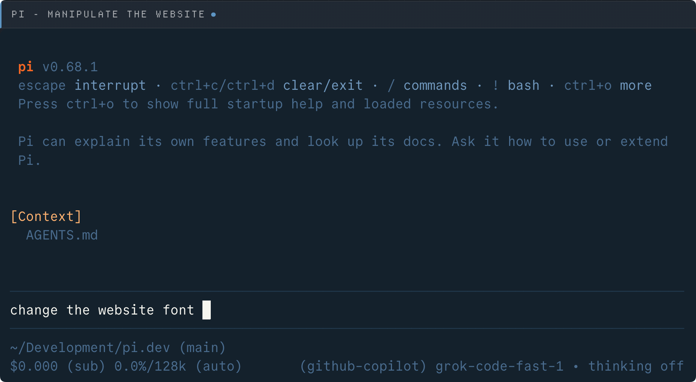
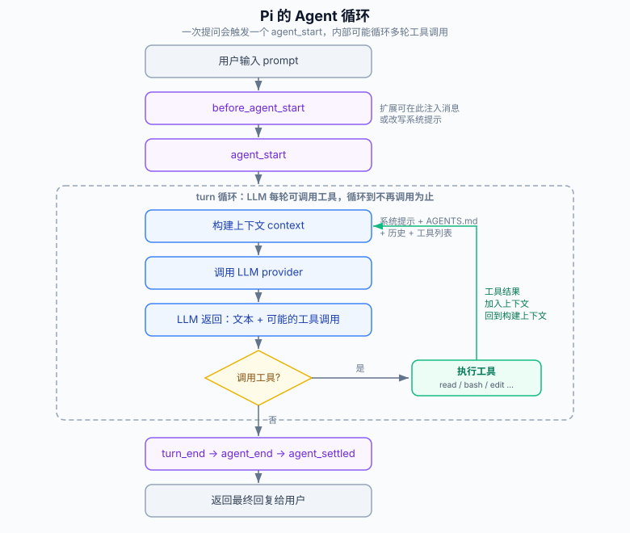

Pi Coding Agent Getting Started Tutorial
Pi is an AI coding agent that runs in the terminal, similar to tools like Claude Code and OpenAI Codex CLI.
Pi's official philosophy is:"There are many agent harnesses but this one is yours"(There are many agent tools, but this one is yours).
Give Pi a sentence, and it can read files, write files, and run commands in your project directory, repeatedly calling the large language model until the task is complete.
The core philosophy is a minimal kernel plus extreme extensibility, allowing you to shape the tool to fit yourself, rather than the other way around adapting to the tool.
Pi Agent Complete Tutorial:https://www.runoob.com/pi-agent/pi-agent-tutorial.html

What Does Pi Include
Pi is not a single program, but a toolchain consisting of four npm packages.
Regular users only need to install the top-level@earendil-works/pi-coding-agent, and you get an out-of-the-box command-line Agent.
Who Is It For
Pi is especially suited to the following scenarios and users:
- Developers who prefer terminal workflows and don't want to switch back and forth between IDEs and the command line
- Advanced users who want a deeply customizable tool—even one that lets the Agent rewrite itself
- People who need to connect to multiple large language models at once (Anthropic, OpenAI, Google, etc.)
- Developers who want to embed Agent capabilities into their own programs (via SDK or RPC mode)
Note: Pi runs with your user permissions by default and has no built-in sandbox. Before using it on untrusted repositories, please read the 'Security Notes' section of this article.
Core Design Philosophy: Primitives, Not Features
Understanding Pi's design philosophy will help you see why it deliberately does not 'bundle in' many features that other Agents have.
Pi calls this conceptPrimitives, Not Features(providing primitives, not features).
Features Deliberately Not Built In
Pi does not include the following features; instead, it lets you implement them on demand via extensions or external tools:
| Features Not Included | Pi's Alternative |
|---|---|
| MCP protocol integration | Write the tool as a CLI with a README, or install an MCP extension |
| Sub-agents | Use tmux to open multiple sessions, or write your own extension |
| Permission confirmation popup | Run it in a container, or write your own confirmation flow extension |
| Plan mode | Write the plan to a file, or write an extension |
| Built-in todos | Use a TODO.md file, or install an extension |
| Background bash | Use tmux for full observability |
Why Do This
Pi believes these features vary greatly across different teams, and forcing them in would make the tool bloated and hard to fit actual workflows.
So its approach is: keep a clean minimal core, and turn all "features" into installable, writable, shareable extensions, skills, prompt templates, and themes.
You can even ask Pi to write these features for you, and once written, use/reloadreload, and it works immediately.
This sentence is worth remembering:Adapt Pi to your workflows, not the other way around(Make Pi adapt to your workflow, not you adapt to Pi).
Architecture and Core Packages
Pi consists of four clearly layered packages, with upper layers depending on lower layers.
The one you normally usepicommand is just the entry point provided by the topmost package.

Four Core Packages
| Package name | Purpose | When you'd use it separately |
|---|---|---|
@earendil-works/pi-coding-agent | Interactive coding Agent CLI, the entry point users directly install and use | Most cases only need this |
@earendil-works/pi-agent-core | Agent runtime, responsible for the tool-call loop and state management | When you want to build a non-coding Agent yourself |
@earendil-works/pi-ai | Unified multi-vendor LLM API (OpenAI, Anthropic, Google, etc.) | When you just want one unified interface to call multiple models |
@earendil-works/pi-tui | Terminal UI library, supporting diff rendering | When you want to write your own terminal application |
Four Running Modes
Pi isn't limited to interactive mode; it offers four modes for different scenarios:
| Mode | Description | Typical scenario |
|---|---|---|
| Interactive | Full terminal UI experience | Daily coding, conversational development |
| Print / JSON | pi -p "提问"One-time output;--mode jsonOutput event stream | Script automation, pipeline processing |
| RPC | JSON protocol communication via stdin/stdout | Non-Node Program Integration |
| SDK | Embed as a library into your application | Integrate Agent capabilities into your own products |
Installation
Pi offers multiple installation methods, covering macOS, Linux, and Windows.
The most common approach is to install globally via npm, but you can also use the official one-click script.
Method 1: One-Click Script (Recommended for Beginners)
macOS and Linux users use curl:
curl -fsSL https://pi.dev/install.sh | sh
Windows users use PowerShell:
powershell -c "irm https://pi.dev/install.ps1 | iex"
Method 2: npm Global Installation
If you already have Node.js installed, just install it globally using the package manager.
Note the--ignore-scriptsparameter: it skips the dependency installation lifecycle scripts. Pi doesn't need these scripts for normal use, and adding it is safer.
# npm 安装 npm install -g --ignore-scripts @earendil-works/pi-coding-agent # pnpm 安装 pnpm add -g --ignore-scripts @earendil-works/pi-coding-agent # bun 安装 bun add -g --ignore-scripts @earendil-works/pi-coding-agent
Verify Installation
After installation, check the version number to confirm it was successful:
pi --version
For example:
$ pi --version 0.80.6
Uninstall
The uninstall method depends on how you originally installed it:
# curl 装的或 npm 装的 npm uninstall -g @earendil-works/pi-coding-agent # pnpm 装的 pnpm remove -g @earendil-works/pi-coding-agent # bun 装的 bun uninstall -g @earendil-works/pi-coding-agent
Note: Uninstalling Pi will not delete your configuration. Settings, credentials, session records, and installed Pi packages are all kept in the
~/.pi/agent/directory and need to be manually cleaned up.
Configure Model Provider
Pi itself does not include a large language model; it requires you to provide access credentials for at least one model provider.
There are two configuration methods: subscription login, or API Key.
Method 1: Subscription Login (Easiest)
If you already have a Claude Pro/Max, ChatGPT Plus/Pro, or GitHub Copilot subscription, you can log in directly and reuse it.
After starting Pi, run/login, then select the provider:
# 启动 pi pi # 在 pi 里执行登录命令 /login
There are three optional subscription providers:
| Provider | Requirement | Description |
|---|---|---|
| Claude Pro / Max | Anthropic subscription | Third-party tool usage is billed per Token and does not count against your subscription quota |
| ChatGPT Plus / Pro（Codex） | OpenAI subscription | Officially recognized by OpenAI through Codex for OSS |
| GitHub Copilot | Copilot subscription | If it prompts that the model is not supported, you need to enable the corresponding model in VS Code first |
After login, credentials are stored in~/.pi/agent/auth.json, and will automatically refresh when expired. To log out, use/logout。
Method 2: API Key (Most Flexible)
Passing the API Key via environment variables is the most universal approach. For example, using Anthropic's Key:
# 设置环境变量后启动 export ANTHROPIC_API_KEY=sk-ant-... pi
You can also run in Pi/loginand choose a provider of type API Key, and persist the Key intoauth.json。
Environment Variables for Common Providers
Pi supports more than 15 providers; the most common ones are listed below:
| Provider | Environment variable | Key name in auth.json |
|---|---|---|
| Anthropic | ANTHROPIC_API_KEY | anthropic |
| OpenAI | OPENAI_API_KEY | openai |
| Google Gemini | GEMINI_API_KEY | |
| DeepSeek | DEEPSEEK_API_KEY | deepseek |
| Groq | GROQ_API_KEY | groq |
| Mistral | MISTRAL_API_KEY | mistral |
| xAI | XAI_API_KEY | xai |
| OpenRouter | OPENROUTER_API_KEY | openrouter |
| Hugging Face | HF_TOKEN | huggingface |
Note:
auth.jsonCredentials in ... take precedence over environment variables. If both are configured, the formerauth.jsonprevails.
Structure of auth.json
If you want to manually manage credentials, you can directly edit~/.pi/agent/auth.json. This file is set to 0600 permissions (readable and writable only by the current user) when created:
{
"anthropic": { "type": "api_key", "key": "sk-ant-..." },
"openai": { "type": "api_key", "key": "sk-..." },
"google": { "type": "api_key", "key": "..." }
}
The Key field also supports three advanced syntax forms for conveniently retrieving values from a password manager or environment variables:
| Syntax | Meaning | Example |
|---|---|---|
"!命令" | Starts with an exclamation mark, executes the command and takes stdout as the Key | "!op read 'op://vault/item/cred'" |
"$变量名" | Gets the value of an environment variable | "$MY_ANTHROPIC_KEY" |
| Plain literal | Used directly as the Key | "sk-ant-..." |
Cloud Platform Providers
If you use cloud-based model services, Pi also supports Azure OpenAI, Amazon Bedrock, Google Vertex AI, Cloudflare, etc.
These usually require additional configuration for endpoint, region, or deployment name. Take Azure OpenAI as an example:
# Azure OpenAI 所需的环境变量 export AZURE_OPENAI_API_KEY=... export AZURE_OPENAI_BASE_URL=https://your-resource.ai.azure.com # 可选：API 版本与部署名映射 export AZURE_OPENAI_API_VERSION=2024-02-01 export AZURE_OPENAI_DEPLOYMENT_NAME_MAP=gpt-4o=my-gpt4o
Configure DeepSeek Provider
Pi supports custom providers via models.json. The configuration file path:
- Linux / macOS：~/.pi/agent/models.json
- Windows：%USERPROFILE%\.pi\agent\models.json
First, obtain an API Key from the DeepSeek open platform:https://platform.deepseek.com/api_keys。
{
"providers": {
"deepseek": {
"baseUrl": "https://api.deepseek.com",
"api": "openai-completions",
"apiKey": "$DEEPSEEK_API_KEY",
"models": [
{
"id": "deepseek-v4-pro",
"name": "DeepSeek V4 Pro",
"contextWindow": 1000000,
"maxTokens": 384000,
"input": ["text"],
"reasoning": true,
"cost": {
"input": 1.74,
"output": 3.48,
"cacheRead": 0.145,
"cacheWrite": 0
},
"compat": {
"requiresReasoningContentOnAssistantMessages": true,
"thinkingFormat": "deepseek",
"reasoningEffortMap": {
"minimal": "high",
"low": "high",
"medium": "high",
"high": "high",
"xhigh": "max"
}
}
},
{
"id": "deepseek-v4-flash",
"name": "DeepSeek V4 Flash",
"contextWindow": 1000000,
"maxTokens": 384000,
"input": ["text"],
"reasoning": true,
"cost": {
"input": 0.14,
"output": 0.28,
"cacheRead": 0.028,
"cacheWrite": 0
},
"compat": {
"requiresReasoningContentOnAssistantMessages": true,
"thinkingFormat": "deepseek",
"reasoningEffortMap": {
"minimal": "high",
"low": "high",
"medium": "high",
"high": "high",
"xhigh": "max"
}
}
}
]
}
}
}
Set environment variables:
Linux / Mac users:
export DEEPSEEK_API_KEY="<你的 DeepSeek API Key>"
Windows users:
$env:DEEPSEEK_API_KEY="<你的 DeepSeek API Key>"
Enter the project directory and run the pi command:
cd /path/to/my-project pi
Enter/modelOpen the model switcher, select deepseek, then choose DeepSeek-V4-Pro or DeepSeek-V4-Flash.
For more configuration options, see:https://github.com/earendil-works/pi/blob/main/packages/coding-agent/docs/models.md。
Credential Resolution Order
When Pi needs credentials for a provider, it searches in the following order and uses the first one found:
| Priority | Source |
|---|---|
| 1 (highest) | Command line--api-keyArguments |
| 2 | auth.jsonEntries in ... (API Key or OAuth token) |
| 3 | Environment variable |
| 4 | models.jsonKey of a custom provider in ... |
First Run
After configuring the credentials, enter your project directory and run directly.piStartup.
# 进入项目目录 cd /path/to/project # 启动 pi pi
After startup, directly type a sentence and press Enter, for example, ask it to analyze this repository:
Summarize this repository and tell me how to run its checks.
Pi will automatically read files, run commands, and then give a summary and methods to check.
Project Trust Prompt
If there are in the current directory or a parent directory.piConfiguration, extensions, skills, and other project-level resources, Pi will first ask you whether you trust this project during interactive startup.
This is to prevent a repository from silently loading its extensions or modifying settings without your knowledge.
Note: The trust decision is saved in
~/.pi/agent/trust.json. Non-interactive mode (-p、--mode json) will not pop up, and by default uses thedefaultProjectTrusthandle.
How Does the Agent Work
Each time you send a message, Pi starts an agent loop. Understanding this loop is understanding how Pi works.

The core is the turn loop in the middle: the model may call tools each turn, Pi executes the tools and stuffs the results back into the context, then lets the model continue, until the model no longer calls tools and gives a final reply.
Four Built-in Tools
By default, Pi only gives the model four tools, covering the core read, write, and execute capabilities of coding.
| Tool | Purpose | Enabled by default |
|---|---|---|
read | Read file content | 是 |
write | Create or overwrite files | 是 |
edit | Apply partial patch modifications to files | 是 |
bash | Run shell commands | 是 |
grep | Search file content | No (needs to be enabled via tool options) |
find | Find files by criteria | No (needs to be enabled via tool options) |
ls | List directory contents | No (needs to be enabled via tool options) |
Control Available Tools
You can precisely control which tools the model can use via command-line arguments.
This is useful when you need to restrict the Agent's capabilities, for example, letting it only review code without making changes:
# 只读模式：只允许读取和搜索类工具 pi --tools read,grep,find,ls -p "审查这段代码" # 禁用某个工具，其余保留 pi --exclude-tools ask_question # 关闭所有内置工具，只保留扩展提供的工具 pi --no-builtin-tools -e ./my-extension.ts # 完全禁用工具，纯对话 pi --no-tools -p "解释一下这个概念"
Reminder: Pi runs in your current working directory and can modify your files. It is recommended to use it with version control such as git for easy rollback at any time.
Give Instructions to the Project with AGENTS.md
AGENTS.md is Pi's project instruction file, telling the model what rules the project has, how to run it, and what to be careful about.
It works similarly to Claude Code's CLAUDE.md — and Pi supports both file names.
Write an AGENTS.md
Create it in the project root directoryAGENTS.md, write the rules you want the model to follow:
# 项目指令 - 改完代码后运行 `npm run check`。 - 不要在本地跑生产环境的数据库迁移。 - 回答尽量简洁。
Where Does Pi Load Instructions From
Pi loads instruction files from multiple locations at startup, in descending order of scope:
| Location | Scope | Description |
|---|---|---|
~/.pi/agent/AGENTS.md | Global | General instructions that apply to all your projects |
Parent directory'sAGENTS.md | Project-level | Searches upward level by level from the current directory |
Current directory'sAGENTS.md | Project-level | The most specific, highest-priority instructions |
For filenames,AGENTS.md 或 CLAUDE.mdany of them works; Pi recognizes all.
Modify System Prompt
AGENTS.md is additional instructions appended beyond the default system prompt. If you want more thorough control, you can replace the entire system prompt.
Placing it in the project.pi/SYSTEM.mdwill replace the default system prompt; placing.pi/APPEND_SYSTEM.mdmeans appending (globally corresponding to~/.pi/agent/the same-named file under).
Note: After changing instruction files, remember to run in Pi
/reloadreload, or restart Pi, for the new instructions to take effect.
Common Operations in Interactive Mode
Interactive mode is the most commonly used form of Pi; mastering a few key operations lets you use it efficiently.
Reference File: @
Enter in the editor@A fuzzy search of project files will pop up; after selecting, the file content is sent to the model as context.
You can also bring files directly when starting from the command line:
# 启动时带上一个文件 pi @README.md "总结一下这个文件" # 带上多个文件一起审查 pi @src/app.ts @src/app.test.ts "一起审查这两个文件"
Run Shell Command: !
In the editor, starting with!entering a command will run it directly and send the output to the model:
# 运行命令，输出会进入模型上下文 !npm run lint # 两个感叹号：运行但不把输出加进模型上下文 !!npm run build
Switch Model and Thinking Effort
Pi supports switching models and thinking effort mid-session to adapt to the complexity of different tasks.
| Action | Shortcut / Command | Description |
|---|---|---|
| Open model picker | /modelor Ctrl+L | Pick one from all available models |
| Toggle thinking effort | Shift+Tab | Cycle among off / minimal / low / medium / high / xhigh / max |
| Cycle favorite models | Ctrl+P / Shift+Ctrl+P | Quickly switch among the few models you have pre-selected |
You can also specify the model and thinking effort directly at startup:
# 指定厂商和模型 pi --provider openai --model gpt-4o "帮我重构" # 用 厂商/模型 的写法 pi --model openai/gpt-4o "帮我重构" # 用 名称:思考强度 的简写 pi --model sonnet:high "解决这个复杂问题" # 限定可在 Ctrl+P 里循环的模型 pi --models "claude-*,gpt-4o"
Input and Editing Tips
| Action | Method | Description |
|---|---|---|
| Multiline input | Shift+Enter (Ctrl+Enter in Windows Terminal) | Insert a line break within a message |
| Path completion | Tab | Complete file paths |
| 粘贴图片 | Ctrl+V (use Alt+V on Windows) | You can also drag images into the terminal. |
| Copy reply | Ctrl+X | Copy last assistant message |
| External editor | Ctrl+G | Open $VISUAL / $EDITOR to edit long text |
Interrupt While Running
While the agent is working, you don't have to wait; you can insert a message at any time.
| Key | Behavior | Use case |
|---|---|---|
| Enter | Steering message: delivered immediately after the current tool finishes, interrupting the remaining tools. | When you notice it's going off track, correct it promptly. |
| Alt+Enter | Follow-up message: delivered after the agent has completely finished. | When you want to add a new requirement. |
| Escape | Abort the current work and restore queued messages back to the editor. | When you want to stop and reorganize. |
Tip: In Windows Terminal, Alt+Enter is full-screen toggle by default; the key bindings for steering and follow-up messages can be modified in settings by
steeringMode和followUpModechanging them.
Quick Reference for Common Slash Commands
Type in the editor/Command completion will pop up. Below are the most common slash commands.
| Command | Function |
|---|---|
/login / /logout | Manage OAuth or API Key credentials |
/model | Switch model |
/scoped-models | Set which models participate in the Ctrl+P loop |
/settings | Adjust thinking effort, theme, message delivery, etc. |
/resume | Choose a session from history to continue |
/new | Start a new session |
/name <名称> | Give the current session a display name |
/session | View session file, ID, message count, token usage, and cost |
/tree | Jump to any node in the session tree and continue from there |
/fork | Fork a new session from a historical message |
/clone | Copy the current branch as a new session |
/compact [提示] | Manually compact the context, optionally with custom instructions |
/copy | Copy the last assistant message to the clipboard |
/export [文件] | Export the session as HTML or JSONL |
/import <文件> | Import and restore a session from a JSONL file |
/share | Upload as a private GitHub Gist to generate a shareable HTML link |
/reload | Reload key bindings, extensions, skills, prompts, themes, and context files |
/trust | Save the trust decision for the current project |
/hotkeys | Show all key bindings |
/changelog | View version update history |
/quit | Quit Pi |
Session Management: Tree History
Pi's sessions are not a straight line; they are a tree.
This means that if you fork at any historical node, the original branch is not lost; all branches exist in the same session file.
Where Are Sessions Stored
Sessions are automatically saved to~/.pi/agent/sessions/, grouped by working directory.
Restore or browse historical sessions from the command line:
# 继续最近一次会话 pi -c # 浏览并选择一个历史会话 pi -r # 给会话起个名字，方便日后查找 pi --name "my task" # 打开指定的会话文件或 ID pi --session <path|id> # 临时会话，不保存 pi --no-session
Navigate the Session Tree
用 /treeYou can open the session tree view and jump to any historical node to continue.
Continuing from there creates a new branch, while the original branch remains unchanged.
Forking and Cloning
| Command | Behavior | Difference |
|---|---|---|
/fork | Fork a new session from an earlier user message | Restart from a certain point in history |
/clone | Clone the current active branch into a new session | Create a copy based on the latest state |
Compress Context
When the conversation becomes long and approaches the model's context limit, Pi automatically compresses earlier messages into a summary.
You can also trigger it manually with/compact, and you can add a custom instruction telling it what to keep in the compression:
# 在 pi 里手动压缩，并要求保留最近改动 /compact 重点保留最近的改动和错误处理
Export and Share
Export the session as HTML for archiving or presentation:
# 导出为 HTML 文件 /export my-session.html # 上传为私有 GitHub Gist，得到分享链接 /share
Non-Interactive Mode and Integration
Pi is not only for interactive conversations; it can also be used as a command-line tool, event stream, RPC service, and SDK library.
One-off Question: print Mode
用 -pLet Pi answer and then exit, suitable for calling in scripts:
# 直接提问 pi -p "总结一下这个代码库" # 配合管道，把内容喂给 Pi cat README.md | pi -p "总结这段文字" # 带图片提问 pi -p @screenshot.png "这张图里是什么？"
Event Stream: JSON Mode
--mode jsonOutputs all events as JSON lines for easy programmatic parsing:
# 输出 JSON 事件流 pi --mode json -p "列出 src 下所有 .ts 文件"
Process Integration: RPC Mode
--mode rpcUses the JSON protocol over stdin/stdout, suitable for non-Node programs (e.g., Python, Go) to drive Pi.
Export Existing Session
Without starting a new session, directly export an existing session file to HTML:
# 把会话文件导出为 HTML pi --export session.jsonl output.html
SDK Mode
If you want to embed Pi's capabilities in your own Node application, you can use SDK mode to include it as a library.
This is a tighter integration than RPC; see the SDK section in the official documentation:https://pi.dev/docs/latest/sdk。
Extensions
Extensions are the core of Pi's extensibility. They are TypeScript modules that can subscribe to lifecycle events, register custom tools, and add commands and shortcuts.
Extensions are loaded via jiti, so you can write TypeScript directly without compilation.
Where to Put Extensions
| Location | Scope |
|---|---|
~/.pi/agent/extensions/*.ts | Global, applies to all projects |
.pi/extensions/*.ts | Project-level, only effective for the current project |
It can also be in subdirectory form (扩展名/index.ts), or withpackage.jsona complete package.
A Minimal Extension Example
The following extension demonstrates three things: startup notification, intercepting dangerous commands, and registering a custom tool and a command.
// 文件路径：~/.pi/agent/extensions/my-extension.ts
import type { ExtensionAPI } from "@earendil-works/pi-coding-agent";
import { Type } from "typebox";
// 扩展导出一个默认工厂函数，接收 ExtensionAPI
export default function (pi: ExtensionAPI) {
// 1. 监听 session_start 事件：会话启动时弹个通知
pi.on("session_start", async (_event, ctx) => {
ctx.ui.notify("扩展已加载！", "info");
});
// 2. 监听 tool_call 事件：拦截危险的 bash 命令
pi.on("tool_call", async (event, ctx) => {
if (event.toolName === "bash" && event.input.command?.includes("rm -rf")) {
// 弹确认框，用户拒绝就阻止执行
const ok = await ctx.ui.confirm("危险操作！", "允许执行 rm -rf 吗？");
if (!ok) return { block: true, reason: "被用户阻止" };
}
});
// 3. 注册一个自定义工具，模型可以调用它
pi.registerTool({
name: "greet",
label: "打招呼",
description: "按名字向某人打招呼",
parameters: Type.Object({
name: Type.String({ description: "要打招呼的名字" }),
}),
async execute(toolCallId, params, signal, onUpdate, ctx) {
return {
content: [{ type: "text", text: `你好，${params.name}！` }],
details: {},
};
},
});
// 4. 注册一个斜杠命令 /hello
pi.registerCommand("hello", {
description: "打个招呼",
handler: async (args, ctx) => {
ctx.ui.notify(`你好 ${args || "world"}！`, "info");
},
});
}
After writing, use-eparameter to temporarily load for testing:
# 临时加载一个扩展来测试 pi -e ./my-extension.ts
What Can Extensions Do
The capabilities of extensions go far beyond the above; they can intervene in almost every part of the Pi workflow:
| Capability | Corresponding method | Typical use |
|---|---|---|
| Register custom tools | pi.registerTool() | Let the model call your business interface |
| Register commands | pi.registerCommand() | Add your own slash commands |
| Register shortcuts | pi.registerShortcut() | Bind custom shortcuts |
| Intercept tool calls | tool_callEvent | Permission confirmation, command rewriting |
| Modify context | contextEvent | Filter history, inject RAG content |
| Inject messages | pi.sendMessage() | Dynamically supplement context |
| Register providers | pi.registerProvider() | Access private model gateways |
| Custom UI | ctx.uiSeries | Dialogs, status bar, components |
Tip: There are more than 50 example extensions in the Pi repository, covering sub-agents, planning mode, permission gates, SSH execution, sandbox, etc. It is the best reference for learning extension development.
Skills
Skills are another type of reusable capability package. The difference from extensions is that skills are mainly instructions and scripts for the model, loaded on demand.
Pi implements the Agent Skills standard, so it can directly use skills from tools like Claude Code and OpenAI Codex.
How Skills Work
Skills use the principle of progressive disclosure.
At startup, Pi only puts the name and description of each skill into the system prompt; when a task matches, the model usesreadtool to load the complete skill description.
This way, you can install many skills without filling up the context from the start.
Where to Put Skills
| Location | Scope |
|---|---|
~/.pi/agent/skills/ | Global |
~/.agents/skills/ | Global (shared across tools) |
.pi/skills/ | Project-level (requires project to be trusted) |
.agents/skills/ | Project-level (shared across tools) |
Structure of a Skill
A skill is a directory containingSKILL.mddirectory, and the rest of the files can be organized freely.
my-skill/
├── SKILL.md # 必需：前置信息 + 指令
├── scripts/ # 辅助脚本
│ └── process.sh
├── references/ # 按需加载的详细文档
│ └── api-reference.md
└── assets/
└── template.json
How to Write SKILL.md
The top of SKILL.md is frontmatter, and below it is the instruction body for the model:
--- name: my-skill description: 这个技能做什么、什么时候用。要写具体。 --- # My Skill ## Setup 首次使用前运行一次： ```bash cd /path/to/skill && npm install ``` ## Usage ```bash ./scripts/process.sh <input> ```
The two most important fields in the frontmatter:
| Field | Required? | Description |
|---|---|---|
name | Required | Up to 64 characters, only lowercase letters, numbers, and hyphens |
description | Required | Up to 1024 characters, determines when the model loads this skill. Be specific. |
Reminder:
descriptionHow well it is written directly determines whether the model will use this skill at the right time. Writing "Process PDF files, extract text and tables, fill forms, merge multiple PDFs" is far better than writing "Help process PDFs."
Manually Invoke Skills
The model may not always load a skill on its own. You can use/skill:名称Force load and execute:
# 加载并执行技能 /skill:brave-search # 带参数加载技能 /skill:pdf-tools extract
Pi Package Management
Extensions, skills, prompt templates, and themes can all be packaged as Pi packages and shared/installed via npm or git.
Pi has a built-in set of package management commands, allowing you to extend capabilities just like installing plugins.
Installation and Uninstallation
# 从 npm 安装一个包 pi install npm:@foo/pi-tools # 从 git 仓库安装 pi install git:github.com/badlogic/pi-doom # 项目本地安装（加 -l） pi install npm:@foo/pi-tools -l # 卸载 pi remove npm:@foo/pi-tools
Updates and Viewing
| Command | Function |
|---|---|
pi list | List installed packages |
pi update | Only update Pi itself |
pi update --all | Update Pi and all packages |
pi update --extensions | Only update packages, leave Pi itself unchanged |
pi update --extension <源> | Update a specified package |
pi config | Enable or disable resources in the package |
Security Notes
Security is an essential part to understand before using Pi. Pi's security model is different from many Agent tools and requires your active cooperation.
No built-in sandbox
Pi Does not include a built-in sandbox, it runs as the user who launched it and has all of that user's permissions.
Built-in tools can read and write files and run shell commands; extensions are TypeScript modules with the same permissions as the Pi process.
This is intentional: Pi needs to work on local source code, invoke project toolchains, and integrate into the development environment. An incomplete in-process sandbox would mislead people into thinking it is a security boundary, while in reality it still relies on the host's shell, file system, and credentials.
Important: real isolation must come from the operating system or container/virtualization boundaries, not from inside Pi.
Project Trust
Project trust determines whether Pi loads project-level settings, resources, extensions, and packages.
When a directory contains.pi/settings.json、.pi/extensions、.pi/skills、.pi/SYSTEM.mdand similar content, Pi will require trust before loading.
| Trust level | Behavior | Setting method |
|---|---|---|
ask(Default) | Interactive prompting; ignore project resources in non-interactive mode | of settings.jsondefaultProjectTrust |
always | Always trust project resources | Same as above, or use-a / --approve |
never | Never trust, ignore project resources | Same as above, or use-na / --no-approve |
Trust decisions are saved in~/.pi/agent/trust.json, recorded by directory path, with the nearest parent directory decision taking priority.
Note: project trust is only an "input loading guard" that prevents repositories from silently modifying your settings or extensions, butcannot make untrusted code, prompts, or model outputs safe. Prompt injection in repository files, comments, and documentation is an inherent risk of local Agents, and Pi cannot reliably prevent it.
Handling Untrusted or Unattended Tasks
For untrusted repositories, generated code that requires close monitoring, or unattended automation, the official recommendation is to run Pi in an isolated environment.
Recommended practices:
- Put the entire
piprocess in a container, virtual machine, or remote sandbox - Only mount workspace paths that the Agent should access
- Unless necessary, do not mount the host's
~/.pi/agent(which contains your credentials and sessions) - Only pass the minimum necessary API keys, or use short-term credentials
- Restrict network access when the task doesn't require internet
- Review diffs and outputs before copying results back to a trusted system
Reminder: If you mount the host workspace into the container in read-write mode, writes inside the container will still modify host files. For stronger protection against accidental writes, use read-only mounts, or copy files in and out of the sandbox.
Resources and Community
Official Resources
- GitHub repository:github.com/earendil-works/pi
- Official website:pi.dev
- Official documentation:pi.dev/docs/latest
- npm package:@earendil-works/pi-coding-agent
Click me to share notes
<p style="font-size:14px;">Notes need to be an expansion of the content of this article!</p><br> <p style="font-size:12px;"><a href="../tougao.html" target="_blank">Article submission, click here</a></p> <p style="font-size:14px;"><a href="../w3cnote/runoob-user-test-intro.html" target="_blank">How to get a registration invitation code</a></p> <h3 class="text-muted"><i class="fa fa-info-circle" aria-hidden="true"></i> Before sharing notes, you must <a href=";.html" class="runoob-pop">log in</a>!</h3> <p><a href="../w3cnote/runoob-user-test-intro.html" target="_blank">How to get a registration invitation code</a></p>